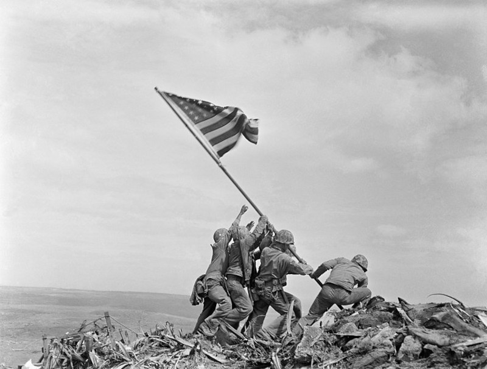
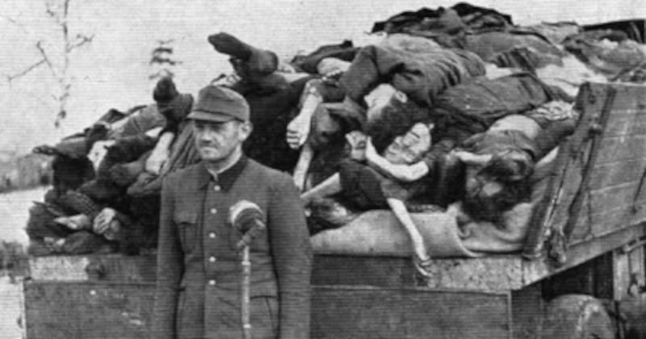
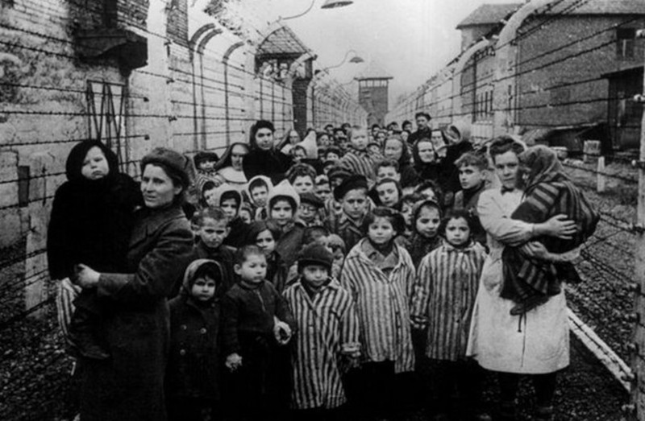

Consequências e Lições de um Mundo em Chamas
A Segunda Guerra Mundial, ocorrida entre 1939 e 1945, foi um dos conflitos mais impactantes da história, envolvendo praticamente todos os continentes e marcando profundamente o século XX. Suas causas estão enraizadas em tensões que remontam à Primeira Guerra Mundial e ao Tratado de Versalhes, que impôs severas sanções à Alemanha, alimentando ressentimentos que contribuíram para o surgimento do nazismo.
A guerra teve como principais protagonistas os Aliados (liderados por Estados Unidos, União Soviética, Reino Unido e França) e as Potências do Eixo (Alemanha, Itália e Japão). O conflito começou com a invasão da Polônia pela Alemanha em setembro de 1939, seguida pela declaração de guerra do Reino Unido e da França. Rapidamente, a guerra se espalhou, alcançando Ásia, África e o Pacífico.
Entre os eventos mais marcantes estão a Batalha da Inglaterra, em que os britânicos resistiram aos bombardeios alemães, e a invasão da União Soviética alemães, e a invasão da União Soviética pela Alemanha em 1941, numa operação que se mostrou desastrosa para as pela Alemanha em 1941, numa operação que se mostrou desastrosa para as forças nazistas devido ao inverno rigoroso e à resistência soviética. No Pacífico, o ataque japonês a Pearl Harbor, em 1941, levou os Estados Unidos a entrarem no conflito, mudando o curso da guerra.
A virada a favor dos Aliados ocorreu a partir de 1943, com vitórias importantes como a Batalha de Stalingrado e a invasão da Itália. O Dia D, em 1944, marcou o início da libertação da Europa Ocidental, com tropas Aliadas desembarcando na Normandia. No Pacífico, os Estados Unidos avançaram em uma estratégia de ilhas, culminando com os bombardeios atômicos de Hiroshima e Nagasaki em agosto de 1945, que forçaram a rendição do Japão.
O conflito terminou oficialmente em setembro de 1945, deixando um legado devastador: dezenas de milhões de mortos, cidades destruídas e deslocamentos massivos de populações. No entanto, a guerra também resultou na criação da Organização das Nações Unidas (ONU), com o objetivo de prevenir futuros conflitos globais.
A Segunda Guerra Mundial não apenas transformou as relações internacionais, mas também influenciou avanços tecnológicos, mudanças sociais e a geopolítica do mundo contemporâneo. Compreender esse período é essencial para refletir sobre os desafios da paz e da justiça no cenário atual.
Holocausto: Memórias de Dor e Ecos da Resistência
O Holocausto foi um dos períodos mais sombrios desse período, marcado pela perseguição e extermínio sistemático de milhões de pessoas, principalmente judeus, pela Alemanha nazista e seus aliados durante a Segunda Guerra Mundial (1939-1945). Sob o comando de Adolf Hitler, o regime nazista promoveu políticas antissemitas que culminaram na tentativa de exterminar completamente os judeus na Europa, além de perseguir outros grupos, como ciganos, pessoas com deficiências, homossexuais, opositores políticos, testemunhas de Jeová e eslavos.
O processo começou com discriminação legal e social, como as Leis de Nuremberg de 1935, que retiraram direitos civis e econômicos dos judeus. Posteriormente, essa exclusão evoluiu para violência direta, com episódios como a Noite dos Cristais (Kristallnacht) em 1938, quando sinagogas, lojas e casas judaicas foram atacadas. Com a guerra em andamento, os nazistas implementaram a "Solução Final", um plano para o extermínio total dos judeus, que levou à criação de campos de concentração e extermínio, como Auschwitz, Treblinka e Sobibor.
Esses campos, localizados principalmente na Polônia ocupada, foram palco de trabalho forçado, experimentos médicos desumanos e assassinatos em massa. Estima-se que cerca de seis milhões de judeus tenham sido mortos, além de milhões de outras vítimas. O Holocausto não foi apenas uma tragédia para as vítimas diretas, mas também uma demonstração assustadora de como ideologias de ódio, combinadas com a indiferença de muitos, podem levar a atrocidades em escala global.
Após a guerra, os julgamentos de Nuremberg responsabilizaram líderes nazistas por seus crimes, estabelecendo precedentes legais contra genocídios. O Holocausto continua sendo estudado e lembrado para garantir que atrocidades semelhantes nunca mais ocorram, destacando a importância da educação, da memória e da luta contra o preconceito em todas as suas formas.